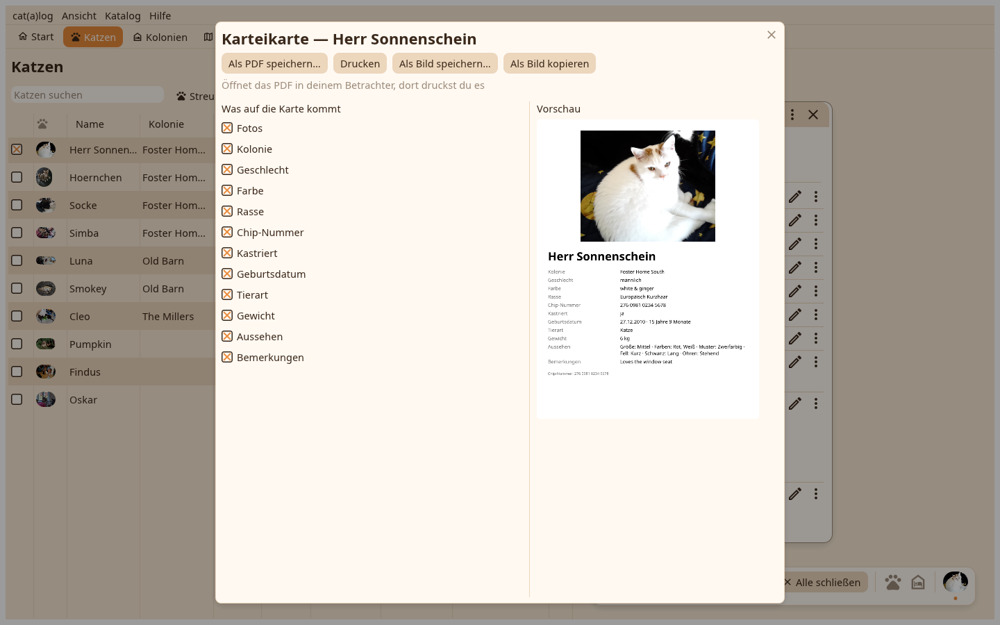
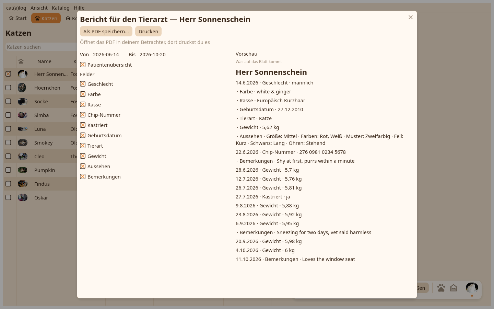
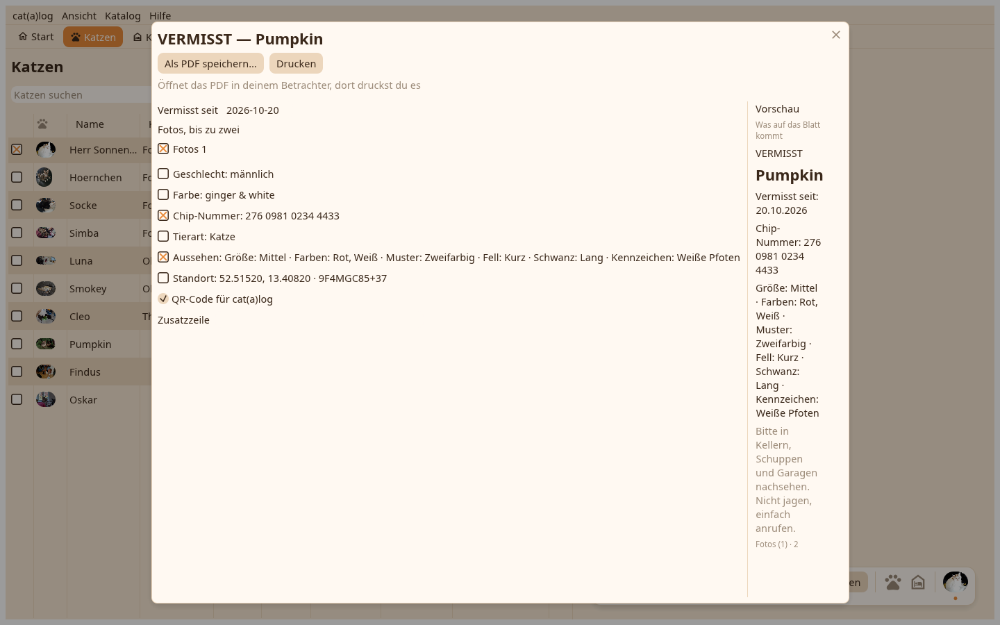

1. Die Karte
Hake die Werte an, die draufkommen; die Vorschau folgt. PDF speichern, Bild speichern, als Bild kopieren oder Drucken.

2. Der Bericht
Der Tierarztbericht: der Zeitraum, die Patientenübersicht, die Zeilen, eine Kurve pro Zahl.

3. Das Plakat
Das Vermisst-Plakat für eine vermisste Katze: die Haken, die Fotos, der Code; schwarz auf weiß gedruckt.
